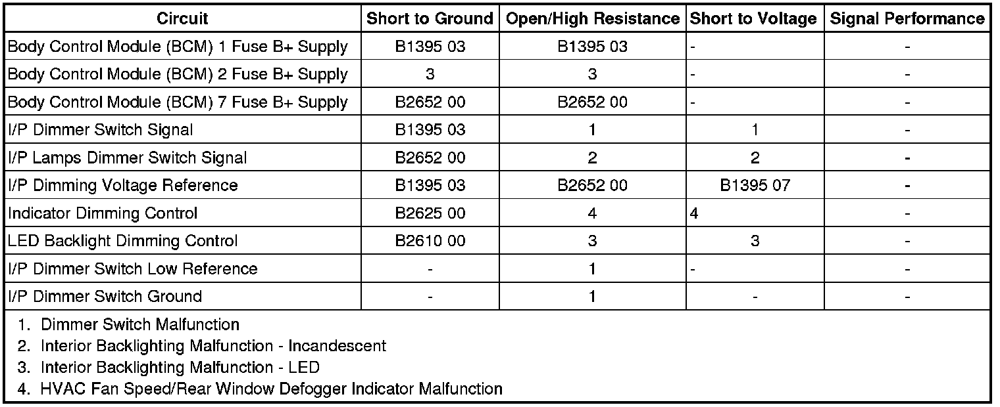

Interior Backlighting Malfunction
Interior Backlighting Malfunction
Diagnostic Instructions
* Perform the Diagnostic System Check - Vehicle (Initial Inspection and Diagnostic Overview) prior to using this diagnostic procedure.
* Review Strategy Based Diagnosis (Initial Inspection and Diagnostic Overview) for an overview of the diagnostic approach.
* Diagnostic Procedure Instructions (Initial Inspection and Diagnostic Overview)provides an overview of each diagnostic category.
Diagnostic Fault Information

Circuit/System Description
The instrument panel (I/P) dimmer switch is used to increase and decrease the brightness of the interior backlighting components. The I/P dimmer switch provides a voltage signal that will increase as the brightness of the light are increased and decrease as the brightness of the lights are decreased. The body control module (BCM) provides a low reference signal and a B+ voltage reference to the I/P dimmer switch. When the I/P dimmer switch is placed in the desired position, the dimmed voltage setting is applied from the I/P dimmer switch through the I/P dimmer switch signal circuit to the BCM. The BCM interprets the signal and applies the dimmed voltage to the I/P lamps supply voltage circuit and the interior backlighting components dim to the requested level.
Reference Information
Schematic Reference
Interior Lights Dimming Schematics (Interior Lights Dimming Schematics)
Connector End View Reference
Component Connector End Views (Connector Views)
Description and Operation
Interior Lighting Systems Description and Operation (Interior Lighting Systems Description and Operation)
Electrical Information Reference
* Circuit Testing (Component Tests and General Diagnostics)
* Connector Repairs (Component Tests and General Diagnostics)
* Testing for Intermittent Conditions and Poor Connections (Component Tests and General Diagnostics)
* Wiring Repairs (Component Tests and General Diagnostics)
Scan Tool Reference
Control Module References (Programming and Relearning)
Circuit/System Verification
Ignition ON, observe the scan tool dimming control signal parameter while operating the dimmer switch from high to low. The reading should change from a high percent to a low percent as the switch is activated.
If the reading does not change, refer to Dimmer Switch Malfunction.
Circuit/System Testing
Dimmer Switch Malfunction
1. Ignition OFF, disconnect the harness connector at the I/P Dimmer switch.
2. Ignition OFF, verify that a test lamp illuminates between B+ and the ground circuit terminal 10.
• If the test lamp does not illuminate, test the ground circuit for an open/high resistance.
3. Ignition ON, verify the scan tool dimming control signal parameter is less than 0.0 volts.
• If greater than the specified range, test the signal circuit terminal 9 for a short to voltage. If the circuit tests normal, replace the BCM.
4. Ignition ON, test for B+ between the voltage reference circuit terminal 5 and ground.
• If less than the specified range, test the voltage reference circuit for a short to ground or an open/high resistance. If the circuit tests normal, replace the BCM.
• If greater than the specified range, test the voltage reference circuit for a short to voltage. If the circuit tests normal, replace the BCM.
5. Install a 3A fused jumper wire between the signal circuit terminal 9 and the B+ reference circuit terminal 5. Verify the scan tool dimming control signal parameter is greater than 2.5 volts.
• If less than the specified range, test the signal circuit for a short to ground or an open/high resistance. If the circuit tests normal, replace the BCM.
6. If all circuits test normal, test or replace the I/P dimmer switch.
Interior Backlighting Malfunction - Incandescent
1. Ignition OFF, disconnect the harness connector at the component with the inoperative incandescent backlighting.
2. Ignition OFF, verify that a test lamp illuminates between B+ and the ground circuit.
• If the test lamp does not illuminate, test the ground circuit for an open/high resistance.
3. Connect a test lamp between the I/P lamps dimmer switch signal circuit and ground.
4. Command the incandescent dimming control ON and OFF with a scan tool. The test lamp should turn ON and OFF when changing between the commanded states.
• If the test lamp is always OFF, test the control circuit for a short to ground or an open/high resistance. If the circuit tests normal, replace the BCM
• If the test lamp is always ON, test the control circuit for a short to voltage. If the circuit tests normal, replace the BCM.
5. If all circuits test normal, test or replace the component with the inoperative incandescent backlighting.
Interior Backlighting Malfunction - LED
1. Ignition OFF, disconnect the X3 harness connector at the BCM.
2. Ignition ON, verify that a test lamp illuminates between the BCM 2 fuse voltage supply circuit terminal 2 and ground.
• If the test lamp does not illuminate, test the voltage supply circuit for a short to ground or an open/high resistance.
3. Ignition OFF, reconnect the X3 harness connector at the BCM.
4. Ignition OFF, disconnect the harness connector at the component with the inoperative LED backlighting.
5. Ignition OFF, verify that a test lamp illuminates between B+ and the ground circuit.
• If the test lamp does not illuminate, test the ground circuit for an open/high resistance.
6. Connect a test lamp between the dimming control circuit and ground.
7. Command the LED dimming control ON and OFF with a scan tool. The test lamp should turn ON and OFF when changing between the commanded states.
• If the test lamp is always OFF, test the control circuit for a short to ground or an open/high resistance. If the circuit tests normal, replace the BCM
• If the test lamp is always ON, test the control circuit for a short to voltage. If the circuit tests normal, replace the BCM.
8. If all circuits test normal, test or replace the component with the inoperative LED backlighting.
HVAC Fan Speed/Rear Window Defogger Indicator Malfunction
1. Ignition OFF, disconnect the X3 harness connector at the HVAC control module.
2. Connect a test lamp between the control circuit terminal 1 and ground.
3. Command the LED dimming control ON and OFF with a scan tool. The test lamp should turn ON and OFF when changing between the commanded states.
• If the test lamp is always OFF, test the control circuit for a short to ground or an open/high resistance. If the circuit tests normal, replace the BCM.
• If the test lamp is always ON, test the control circuit for a short to voltage. If the circuit tests normal, replace the BCM.
4. If all circuits test normal, replace the HVAC control module.
Front Door Switch Indicator Malfunction
1. Ignition ON, with a scan tool command the inoperative front door switch Integrated Sw. Backlighting Test ON and OFF with a scan tool. The switch backlighting should turn ON and OFF when changing between the commanded states.
• If the switch backlighting does not turn ON and OFF or remains ON at all times, replace the inoperative driver door switch.
Repair Instructions
Perform the Diagnostic Repair Verification (Verification Tests) after completing the diagnostic procedure.
* Electronic Traction Control Switch Replacement (Left Hand Drive) (Electronic Traction Control Switch Replacement (Left Hand Drive))Electronic Traction Control Switch Replacement (Right Hand Drive) (Electronic Traction Control Switch Replacement (Right Hand Drive))
* Radio Replacement (Left Hand Drive) (Radio Replacement (Left Hand Drive))Radio Replacement (Right Hand Drive) (Radio Replacement (Right Hand Drive))
* Driver Information Display Switch Replacement (Service and Repair)
* Hazard Warning Switch Replacement (Left Hand Drive) (Hazard Warning Switch Replacement (Left Hand Drive))Hazard Warning Switch Replacement (Right Hand Drive) (Hazard Warning Switch Replacement (Right Hand Drive))
* Instrument Panel Lamp Dimmer Switch Replacement (Left Hand Drive) (Instrument Panel Lamp Dimmer Switch Replacement (Left Hand Drive))Instrument Panel Lamp Dimmer Switch Replacement (Right Hand Drive) (Instrument Panel Lamp Dimmer Switch Replacement (Right Hand Drive))
* Transmission Floor Shift Control Indicator Lamp Replacement (Transmission Floor Shift Control Indicator Lamp Replacement)
* Sunroof Switch Replacement (Service and Repair)
* Steering Wheel Replacement (Steering Wheel Replacement)
* Rear Window Wiper and Washer Switch Replacement (Service and Repair)
* Clock Replacement (Service and Repair)
* Automatic Transmission Control Indicator Replacement (6L50/6L80/6L90 - Automatic Transmission)
* Steering Wheel Control Switch Assembly Replacement (Service and Repair)
* Control Module References (Programming and Relearning)for BCM, DDM, HVAC, IPC, or PDM replacement, setup, and programming